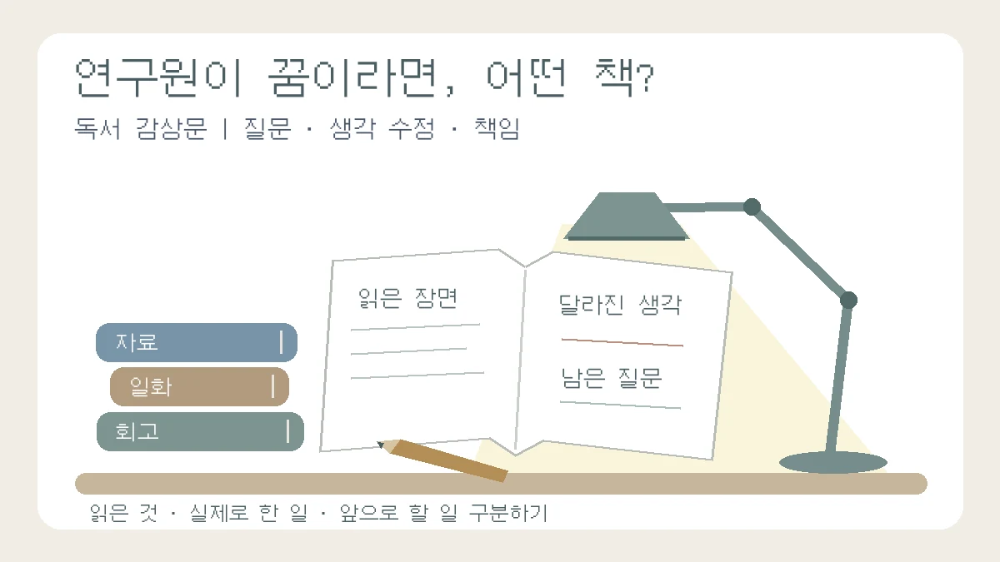

연구원이 꿈이라면 어떤 책을 읽을까? 분야별 도서 3선과 감상문 쓰기
유명한 책 목록보다 중요한 것은 읽고 의심하고 생각을 바꾼 과정입니다
목차
- 궁금한 연구 장면부터 고르기
- 이중나선과 다른 연구 기록
- 파인만의 호기심과 정직성
- 팩트풀니스와 첫 판단
- 감상문 네 문단
- 수행을 꾸미지 않는 작성 예시
- 제출 전 점검
- 서지·원자료와 확인 범위
핵심 요약
- 독서 감상과 사고의 변화도 과제 목적에 맞게 기록
- 저자의 회고·추가 자료·나의 해석을 구분
- 읽은 일·실제로 한 일·앞으로 할 일을 분리

“연구원이 되고 싶은데 동아리·진로 활동의 감상문으로 어떤 책을 읽을까요?” 아직 연구 분야를 정하지 못했다면 어려운 전공서부터 고를 필요는 없습니다. 연구자가 질문하고, 자료를 해석하고, 판단을 고치는 모습 중 무엇이 궁금한지부터 정해 보세요. 이 글은 자연·생명, 공학·물리, 사회·정책 분야에 관심 있는 학생을 위한 세 가지 읽기 경로입니다.
특정 도서를 읽으면 합격에 유리하다거나 세특에 정해진 평가 등급을 받는다는 보장은 하지 않습니다. 학교가 감상문을 요구했다면 감상과 생각의 변화를 쓰는 것이 과제의 중심입니다. 감상문을 의미 없다고 치부하거나, 모든 독서를 실험·통계 분석으로 바꿀 필요도 없습니다. 분량·완독 여부·제출 형식과 AI 사용 범위는 담당 교사의 안내를 먼저 확인하세요.
분야보다 먼저 고를 것: 내가 궁금한 연구의 장면
- 다른 사람의 자료와 생각이 발견으로 연결되는 과정: 《이중나선》을 읽되, 저자의 시점과 다른 기록을 비교합니다.
- 사소한 의문을 끝까지 따져 보는 태도: 《파인만 씨, 농담도 잘하시네!》에서 한 일화를 선택합니다.
- 숫자를 보고 첫인상을 고치는 과정: 《팩트풀니스》에서 내가 잘못 짐작한 질문을 출발점으로 삼습니다.
아래 추천은 확인한 한국어판의 서지·소개와 별도의 원자료를 바탕으로 한 편집팀의 제안입니다. 책 전체를 정독한 서평이나 대학의 공식 필독서 목록이 아닙니다. 도서관에서 목차와 몇 쪽을 읽고 이해할 수 있는 책부터 고르세요. 부분 읽기만 허용되는지는 과제 조건에 따르며, 실제 읽은 권·장·쪽을 기록합니다.
자연·생명 분야: 《이중나선》을 한 사람의 회고로 읽기
확인한 판본: 제임스 왓슨 지음, 최돈찬 옮김, 궁리, 2006년판. 부제는 ‘생명에 대한 호기심으로 DNA구조를 발견한 이야기’입니다. DNA 구조 발견 과정의 경쟁과 갈등 등을 저자의 시점에서 전하는 책입니다.[1]
읽기 질문: “발견을 설명하는 저자의 이야기와, 그 발견에 사용된 자료를 만든 사람의 기여는 어떻게 구분할까?” 연구자의 회고는 당시 경험을 읽는 자료이지만 사건 전체의 중립적 결론과 같지는 않습니다. 인물에 대한 저자의 평가와 확인 가능한 연구 사실을 다른 칸에 적어 보세요.
비교할 추가 자료: 킹스칼리지런던의 설명은 ‘사진 51’을 로잘린드 프랭클린과 당시 박사과정 학생 레이먼드 고슬링이 얻은 X선 회절 영상으로 소개합니다. 또한 그 영상이 왓슨에게 제시된 경위를 설명하며, 프랭클린이 그 사실을 알지 못했다고 적습니다.[2] 사진은 DNA를 일반 카메라로 직접 촬영한 모습이 아니라 구조를 해석하는 데 쓰인 회절 자료입니다. 자료의 생산·공유·기여 인정이 각각 다른 문제임을 살펴보세요. 이 글은 역사적 논쟁 전체를 한 문장의 선악 판단으로 정리하지 않습니다.
감상문에 남길 것: 책의 한 장면에 대한 내 반응, 그 반응을 바꾼 추가 기록, 아직 판단하기 어려운 점을 적습니다. 동아리에서 DNA를 추출한 경험이 있다면 ‘추출물을 관찰한 일’과 ‘분자 구조를 규명한 연구’를 구분하세요. 직접 구조를 증명했다고 쓰지 않습니다. 실험 경험이 없어도 자료 공유와 공동 연구자의 기여를 어떻게 기록할지 질문하는 감상문을 쓸 수 있습니다.
생명과학 개념 자체에서 독서 질문을 고르고 싶다면 고1 생명과학 도서 3선 가이드로 이어 읽으세요. 그 글이 유전·열역학·생태의 개념 질문을 다룬다면, 여기서는 연구 과정과 기록을 읽는 태도에 집중합니다.
공학·물리 분야: 《파인만 씨, 농담도 잘하시네!》에서 태도와 행동을 구분하기
확인한 판본: 리처드 파인만 지음, 김희봉 옮김, 사이언스북스. 여기서 서지 기준으로 삼은 것은 2000년판 1권이며, 한국어판은 1·2권으로 나뉘어 있습니다. 두 권의 수록 시기가 다르므로 실제로 읽은 권을 밝혀야 합니다.[3]
읽기 질문: “설명할 수 있다고 생각했던 것이 실제로도 이해한 내용일까?” 연구자의 호기심과 일화를 읽으며 내가 이해했다고 넘긴 장면을 돌아보세요. 이 책을 양자전기역학의 수학적 유도 교재로 읽거나, 일상적인 일화 하나가 복잡한 이론을 완성한 전 과정이라고 축약하지 않습니다.
비교할 추가 자료: 별도 원문인 파인만의 「Cargo Cult Science」는 자신의 해석을 의심하게 하는 조건과 다른 설명 가능성도 드러내는 과학적 정직성을 강조합니다.[4] 이 원문을 특정 한국어판 권의 수록 내용으로 확인 없이 단정하지 않고 추가 읽기 자료로 구분합니다. ‘나 자신을 속이지 않는다’는 태도와 기본 가정에서 다시 추론하는 방법을 같은 전문 용어의 정의처럼 취급하지도 않습니다.
감상문에 남길 것: 책 속 행동 중 닮고 싶은 점과 그대로 따라 해서는 안 된다고 본 점을 나눠 써 보세요. 호기심이 있다고 모든 장난이나 위험한 행동이 정당해지는 것은 아닙니다. 동아리 기록이 있다면 측정 조건이나 이상한 값을 어떻게 적었는지 돌아볼 수 있습니다. 예상과 다른 값이나 측정오차가 곧바로 부정행위라는 뜻은 아니며, 없던 값을 만들거나 유리한 결과만 남기는 일과 구분합니다. 기록이 없다면 ‘정직한 연구 노트를 작성했다’고 꾸미지 말고 앞으로 남길 항목을 계획으로 적습니다.
사회·정책 분야: 《팩트풀니스》에서 내 짐작을 점검하기
확인한 판본: 한스 로슬링·올라 로슬링·안나 로슬링 뢴룬드 공동 저자, 이창신 옮김, 김영사, 2019년판. 여기서는 이 판본의 서지를 확인했으며 최신 개정판이라고 소개하지 않습니다.[5] Gapminder는 책과 연결된 상세 설명·자료 확인 경로도 제공합니다.[6]
읽기 질문: “내가 당연하다고 생각한 답은 어떤 경험이나 정보에서 나왔을까?” 먼저 책의 질문 하나에 답을 예상해 보고, 설명을 읽은 뒤 생각이 바뀌었는지 적습니다. 틀린 답을 부끄러운 결과로 지우기보다 처음 짐작한 이유를 남겨 보세요.
감상문에 남길 것: ‘통계가 중요하다고 느꼈다’에서 한 걸음 더 나아가, 어느 질문에서 왜 예상이 빗나갔는지 씁니다. 수치를 옮길 때는 조사 연도·대상·지표 정의를 함께 확인합니다. 책의 과거 수치를 현재 상황으로 소개하거나 데이터가 있다는 이유만으로 가치판단까지 객관적으로 확정됐다고 쓰지 않습니다. 원자료를 실제로 정제하지 않았다면 ‘빅데이터 분석을 수행했다’는 표현도 빼세요.
이 책은 수치 자료에 대한 첫 판단을 돌아보는 경로로 제안합니다. 인문·사회 연구가 모두 통계 분석인 것은 아닙니다. 역사 자료의 맥락이나 인터뷰의 의미를 해석하는 탐구라면 그 방법에 맞는 책과 근거를 따로 찾아야 합니다.
감상문 네 문단: 장면 → 해석 → 반문 → 실제 행동 또는 계획
아래 틀은 학생의 독서 기록을 위한 연습 방법입니다. 교사가 작성하는 세특 문장이나 공식 평가 등급의 조건이 아닙니다. 자신의 감정을 빼고 전문 용어로만 채우는 대신, 인상 깊었던 이유와 그 이유가 달라진 과정을 써 보세요.
- 내가 멈춘 장면: 실제 읽은 권·장·쪽을 적고, 놀라움·불편함·공감 등 어떤 반응이 생겼는지 설명합니다. 원문을 그대로 인용하면 인용 표시와 위치를 밝힙니다.
- 그 장면을 처음 이해한 방식: 저자가 무엇을 선택하거나 판단했다고 읽었는지 자기 말로 풉니다. 책의 설명과 나의 해석을 구분합니다.
- 다시 묻게 된 질문: 다른 기록과 맞지 않는 부분, 빠진 관점, 내 경험과 다른 조건을 찾습니다. 비교 자료가 없다면 확인하지 못한 점을 그대로 남깁니다.
- 현재의 생각과 다음 행동: 실제로 바꾼 기록이나 행동이 있다면 근거와 함께 적습니다. 아직 없다면 앞으로 무엇을 확인할지 계획으로 씁니다. 선택과목 이름을 무리하게 붙이지 말고 학교의 개설 과목·과제와 연결되는지 먼저 확인합니다.
작성 예시: 하지 않은 연구를 보태지 않고도 생각의 변화 쓰기
다음은 편집팀이 만든 교육용 가상 문장입니다. 실제 학생의 활동이나 책의 직접 인용이 아닙니다. 예시를 외워 제출하지 말고, 본인이 읽고 확인한 내용으로 바꾸세요.
수정 전 가상 문장
연구자는 실패를 극복해야 한다는 것을 깨달았다. 이를 실험에 적용해 모든 오차를 해결했고 연구 윤리를 증명했다.
무엇을 읽고 생각이 달라졌는지 없고, 수행한 실험의 근거도 빠져 있습니다. 단지 독서를 했는데 실험과 검증까지 마친 것처럼 쓰면 실제 활동과 문장이 어긋납니다.
수정 후 가상 문장 · 추가 자료를 읽었지만 실험에는 적용하지 않은 경우
처음에는 발견의 결과와 발표한 사람에게 주로 관심이 갔다. 추가 자료에서 관찰 자료를 만든 사람과 그 자료를 이용해 모형을 만든 사람의 역할을 구분해 읽으면서, 연구를 한 사람의 성공담으로만 이해하기 어렵다고 느꼈다. 자료를 누가 만들고 어떤 경로로 공유했는지 더 확인하고 싶다. 아직 동아리 실험이나 기록 방식을 바꾸지는 않았으며, 다음 공동 활동에서는 자료 출처와 개인별 기여를 어떻게 남길지 먼저 상의해 보고 싶다.
수정 후 예시도 해당 독서와 추가 자료 확인을 실제로 했을 때만 사용할 수 있습니다. 활동 적용이 없다는 사실을 숨기지 않아도 감상과 질문은 남길 수 있습니다. 이미 연구 노트를 고친 경험이 있다면 실제 수정 전후 부분을 제시하고, 아직 제안에 그쳤다면 ‘실행했다’가 아니라 ‘제안했다’고 씁니다.
책을 고른 뒤 제출 전 확인할 것
- 세 분야 중 한 경로부터 고르고 목차·일부 문장을 읽어 이해 수준을 확인했는가?
- 완독·분량 조건을 따르고, 실제 읽은 판본과 범위를 적었는가?
- 책 속 일화와 별도 자료, 저자의 평가와 나의 판단을 구분했는가?
- 느낀 점이 생긴 구체적인 장면과 생각이 바뀐 이유가 있는가?
- 하지 않은 실험·발표·데이터 정제·공동 활동을 수행했다고 쓰지 않았는가?
- 개인정보·친구의 원자료를 허락 없이 공유하거나 위험한 실험·책 속 장난을 재현하도록 계획하지 않았는가?
감상문을 넘어 탐구보고서가 필요한 과제라면 탐구보고서 대표 작성 가이드에서 질문과 방법부터 정리하세요. 활동 사실을 수업에서 어떻게 전달할지 고민된다면 교사가 확인할 수 있는 활동 사실 정리법, 읽은 자료가 내 주장을 뒷받침하는지 보려면 출처·근거 점검 칼럼과 연결할 수 있습니다.
서지·원자료와 확인 범위
확인일: 2026년 11월 3일. 서점 자료는 판본·저자·역자·구성 확인용이며 입시 평가의 근거가 아닙니다. 사진 51과 파인만의 과학적 정직성에 관한 설명은 별도 기관 원문과 대조했습니다. 사진·책 표지·원문 전문은 재게시하지 않았고, 추천 활동과 감상문 예시는 편집팀의 독립 제안입니다.
- [1] 《이중나선》 궁리 2006년판 서지
- [2] King’s College London — The story behind Photograph 51
- [3] 《파인만 씨 농담도 잘하시네 1》 한국어판 서지·구성
- [4] Richard Feynman — Cargo Cult Science, Caltech 보관 원문
- [5] 《팩트풀니스》 김영사 2019년판 서지
- [6] Gapminder — Factfulness와 상세 설명 안내
관련 글
고1 생명과학 도서 3선, 생기부를 채우기보다 탐구 질문을 찾는 독서NEW
크리스퍼·생명과 열역학·인수공통감염을 다루는 세 권에서 고1이 읽을 부분과 첫 질문을 고릅니다. 책별 난도, 작은 산출물, 과학 설명의 한계와 정직한 독서 활동 기록을 안내합니다.

탐구보고서 쓰는 법: 형식 6요소와 서론·본론·결론 실제 예시NEW
탐구보고서의 기본 구조 6요소와 작성 순서, 한 가지 가상 예시로 완성하는 서론·본론·결론 문장, 하루 30분씩 5일 작성 계획과 수정 기록 방법을 정리한 대표 작성 가이드입니다.

교과세특이란? 탐구보고서와 세특을 자연스럽게 연결하는 기준과 과목별 예시NEW
교과세특의 뜻과 2026 기재요령의 기록 원칙, 탐구보고서 제출만으로 기록되지 않는 이유, 학생이 남길 사실 메모와 수학·사회 등 5개 과목의 과정 예시를 정리한 대표 가이드입니다.
이 글은 일반 교육 정보이며 특정 대학 합격·학생부 평가·면접 결과를 보장하지 않습니다. 학교와 대학의 공식 안내를 함께 확인해 주세요.